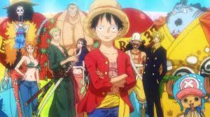

Mis series favoritas
En esta sección voy a listar cuáles han sido las series que mas he disfrutado viendo. Algunas de ellas incluso vistas más de tres veces.
- Juego de tronos
- Stranger things
- Breaking bad
- Outlander
- The offcie
De todas las series mencionadas anteriormente, la más especiel que he visto ha sido
Juego de Tronos. Esta serie trata sobre la política vivida en un mundo ficticio
ambientado en una etapa medieval alternativa. Juego de tronos ha sido premiada
con numerosos galardones. Es sin duda una serie muy especial para mucha gente.
Pero la mejor serie que he visto y más emociones me ha creado ha sido ...
One Piece
One piece es una serie que trata sobre un chico que tiene un sueño, convertirse en el rey de los piratas. Esta tarea no es sencilla y para lograrlo
encuentra durante el viaje una serie de personas que se acaban convirtiendo en sus mejores amigos.
A pesar de ser unos dibujos animados, los temas narrados pueden llevar al espectador
al límite. Entre ellos están: el tráfico de armas, la esclavitud, el racismo, la adicción a las
drogas ...

Se trata de una serie ambientada en el manga creado por el maestro Eiichiro Oda. El manga y el anime lleva actualmente 24 años en producción y según las
declaraciones del autor "aún quedan unos 5 años de trabajo"